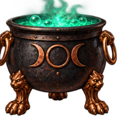

Witch’s Wild Mixer
Potion increases only following cascades.

Starts at ×1 each round
Outcomes use official Stake publish/event shapes. Presentation never changes payout.
Collect matching symbols anywhere on the 6 × 5 board. Winning symbols disappear and new symbols cascade into their place. Potion events increase the cauldron multiplier during this round.
The round win accumulates during the chain. The final result stays visible. The cauldron returns to ×1 for each independent round. Character reactions do not change results.
Spin or Space starts a round. Bet amount changes its size. Fast shortens the presentation. Replay last replays the previous preview round. Sound and motion options are in Settings.
8 or more of one identical ID pays anywhere. L1–L5 and H1–H4 are nine different symbols. Groups pay with the current multiplier, then all visible Potion activate and disappear with winning symbols. P1/P2/P3 add +1/+2/+3 for following cascades only. On a non-paying board, Potion stays inactive. One paid sample starts at ×1.
Whole-round cap: 5000×. On cap the chain stops on its last authoritative board. Technical limit: 64 cascades; exceeding it is an error. 100 payout units = 1× bet; currency uses exact six-decimal units. Values below a cent remain visible.
Sample outcomes / no real funds. This unbalanced integration configuration is not approved production math. RTP, future Free Spins and max-win probability remain unapproved. No Free Spins are awarded.
Play a sample to inspect the group awards.
Compare mobile A/B and character on the same phase
Character animation targets 30 FPS with a four-second loop. Sound is temporary. Reduced motion uses a stable pose and still scenery.
The coven celebrates
Your round result is shown above. The witch completes her current dance.
Sample outcome. Win tiers and artwork remain in review.
Motion fixture only
This previews the BONUS dance and window choreography. No Free Spins are awarded and no wager is placed.
Live bonus events are a separate M04.2 integration task.